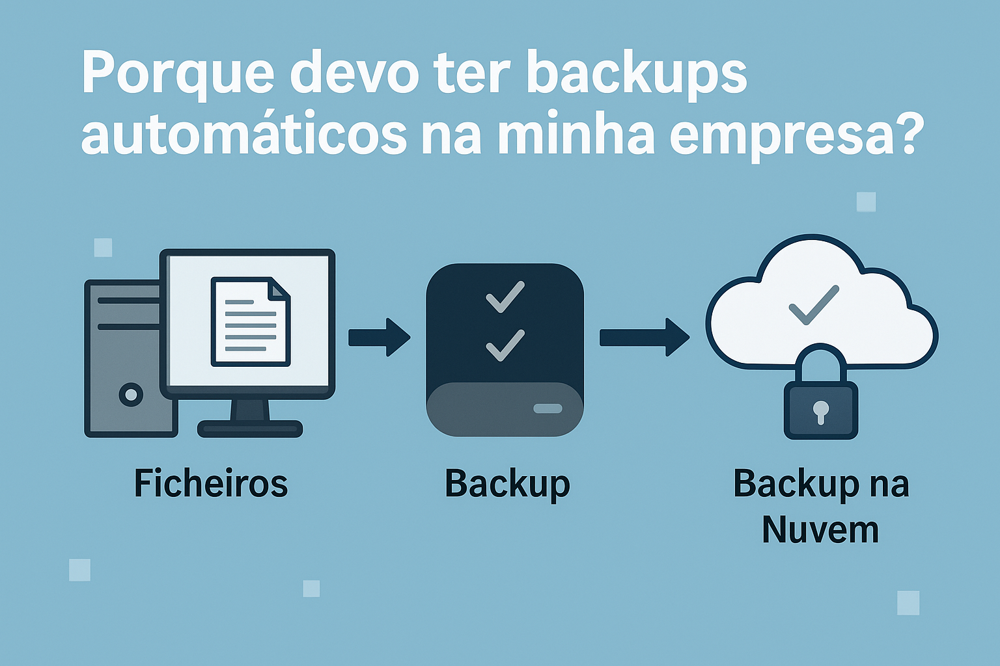

Perder dados pode significar perder faturação, clientes e credibilidade. Muitos negócios ainda confiam apenas em cópias manuais ou pen drives — que são facilmente esquecidas ou perdidas.
Com um sistema de backup automático configurado por mim, os seus ficheiros são salvos todos os dias, localmente e/ou na nuvem privada, com alertas em caso de falha.
O backup é invisível para os utilizadores, sem depender de ações manuais. Além disso, é possível definir retenção semanal, mensal e restaurar versões antigas em minutos.
Esta é uma das formas mais simples e baratas de proteger o coração da tua empresa: os dados.
Falar sobre backups →Fala comigo já via Telegram e recebes orçamento rápido sem compromisso.
📩 Contactar Agora